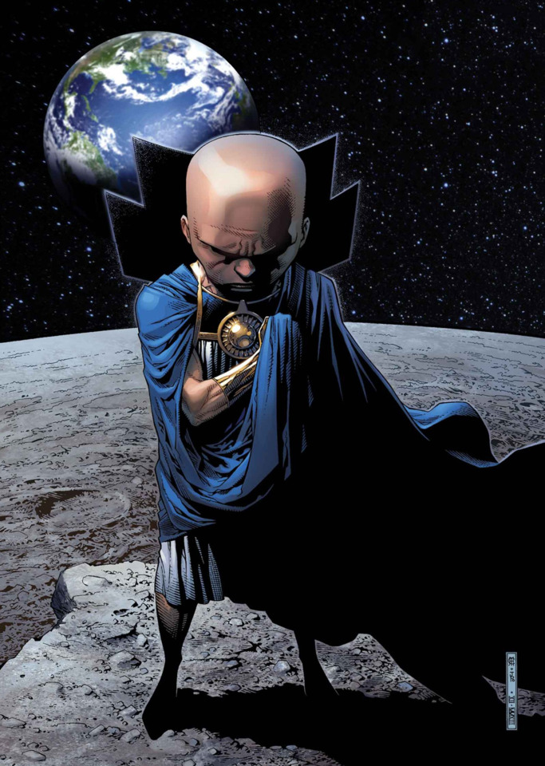
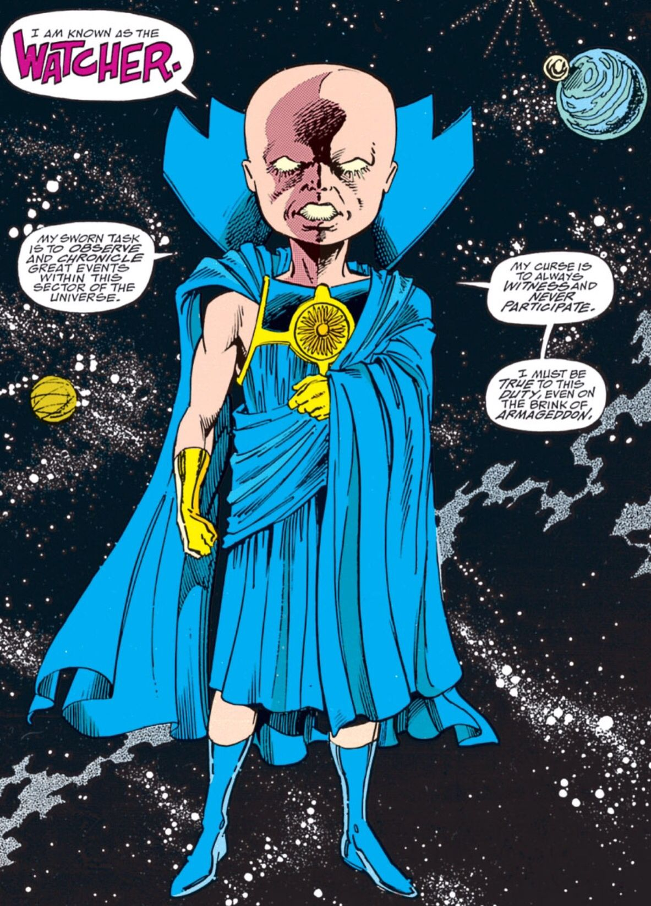
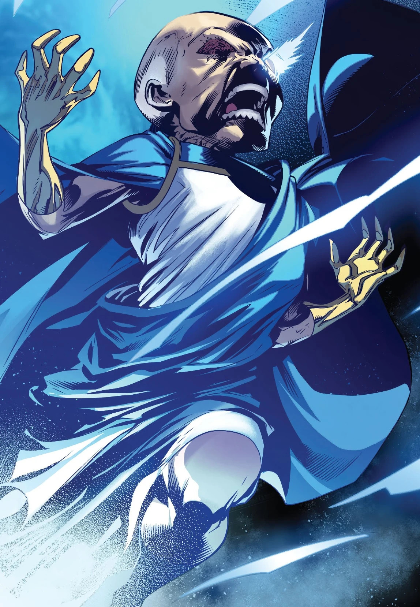
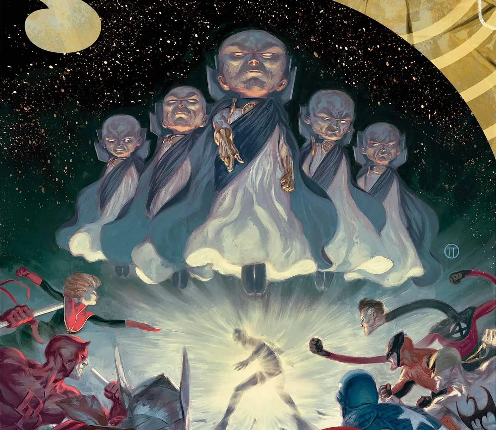
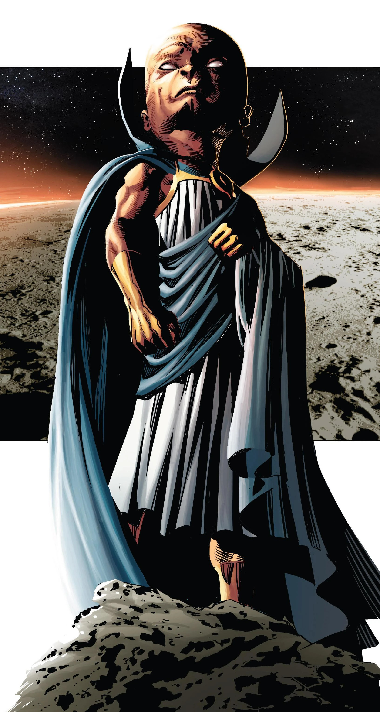

Uatu, le Gardien

Histoire :
Il y a des milliards d'années, la race extraterrestre technologiquement avancée connue sous le nom de Gardiens décida qu'il était de son devoir d'aider les races moins avancées de l'univers.
Lors de leur première expérience proposée par Ikor (un Gardien), une délégation de quatre personnes apporta la connaissance de l'énergie atomique sur la planète Prosilius.
Les Prosilicans acceptèrent ce don, mais l'utilisèrent pour développer des armes nucléaires et se livrèrent une guerre génocide.
Honteux de leurs actes, les Gardiens jurèrent de ne plus jamais s'immiscer dans les affaires des autres espèces.
Uatu tenta de convaincre Ikor, son père, que ses actions étaient nobles malgré l'issue tragique, mais ses paroles n'eurent aucun impact.
Après l'incident de Prosilius, Ikor rédigea un code d'éthique fondé sur la non-intervention stricte et l'observation passive.
Uatu demanda à son père si leur vœu de non-intervention ne serait pas un obstacle pour les espèces en dangers, mais Ikor conseilla à son fils que, quoi qu'il arrive, ils ne devraient plus jamais s'immiscer dans les affaires des autres mondes.
Se faisant désormais appeler les Gardiens, ils parcoururent l'univers, observant tout ce qu'ils rencontraient.
Des milliers d'années plus tard, Uatu fut confronté à une situation mettant à l'épreuve le vœu de son peuple lorsqu'il vit les Yrds se débarrasser de déchets atomiques en les éjectant dans l'espace, menaçant potentiellement d'autres mondes lointains.
Il observa cette masse de déchets pendant des décennies, jusqu'au jour où une supernova éjecta une planète errante à travers l'espace.
Uatu vit la planète dériver jusqu'à percuter le nuage de déchets atomiques, détruisant les deux sur le coup.
Cet événement conforta Uatu dans l'idée que son père avait raison : ils devaient laisser faire le destin.
Finalement, les Gardiens se répartirent sur les lunes de divers mondes habités afin d'en observer les activités.
Uatu fut affecté à la planète Terre et construisit une citadelle dans la Zone Bleue de la Lune.
Non seulement il observa l'histoire de la Terre, mais s'intéressa également à l’observation de ce monde dans des univers parallèles.
Son intention première était de trouver une réalité où son peuple n'avait pas commis sa grande erreur, mais il ne trouva jamais de telle réalité.





Apparence :
Uatu, le Gardien, possède une silhouette humanoïde masculine, grande et élancée avec une peau généralement représentée dans des tons foncés.
Sa caractéristique principale est son crâne chauve, particulièrement imposant et disproportionné par rapport à son corps.
Ses yeux sont extrêmement grands, presque démesurés et généralement dépourvus d'iris et de pupilles visibles. Ils apparaissent généralement blancs et lumineux, donnant à son regard une impression surnaturelle renforçant son aura omnisciente.
Généralement, Uatu est vêtu d'une longue tunique ample, souvent blanche et bleue, descendant jusqu'aux pieds.
Il porte une longue cape bleue, attachée au niveau des épaules et tombant dans son dos.
Il porte également de nombreux ornements dorés, comme une ceinture dorée et des pièces d'armures autour du cou, des épaules et du torse, ainsi que des gants assortis à sa tenue.